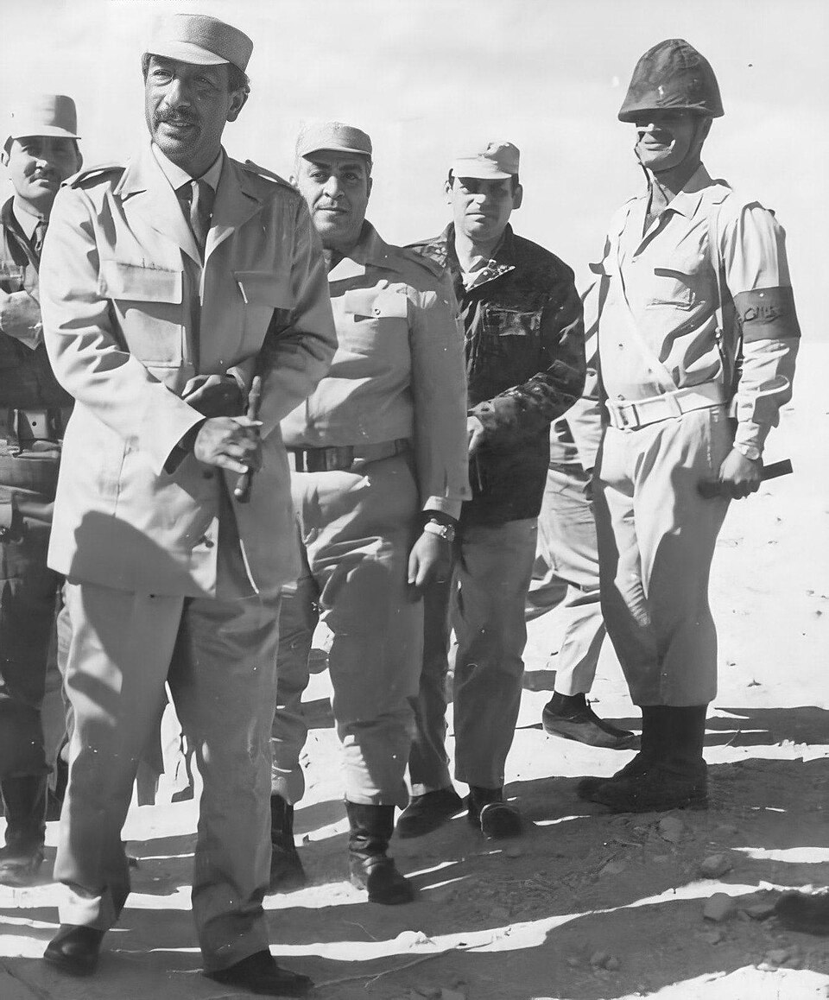

A42-POL-005 // HISTORICAL CLAIM REVIEW
The Assassination of Anwar Sadat
Assessment: A coordinated Egyptian militant cell assassinated Sadat with high confidence.


The precise allegation
Egyptian President Anwar Sadat was killed during a military parade in 1981 by members of an Islamist militant cell led by army lieutenant Khalid Islambouli. The attack involved coordinated participants and weapons smuggled into the parade unit. Claims that Egyptian authorities deliberately staged the attack or that a foreign government directed it lack persuasive documentary support.
Chronology and political context
The assailants attacked Sadat's reviewing stand on October 6, 1981, during the anniversary parade for the 1973 Arab-Israeli war. Islambouli and fellow conspirators were arrested, tried, and executed. The plot emerged from militant opposition to Sadat's peace treaty with Israel, repression of Islamist groups, and political disputes. The assassination was followed by emergency measures and a crackdown.
Primary historical record
Egyptian trial records, televised footage, official investigations, and statements from the perpetrators establish the immediate plot and its participants. The proceedings took place under an authoritarian government and offered limited independent scrutiny, but the direct attack was publicly witnessed and extensively documented. The public record supports a militant conspiracy rather than a lone gunman or an undisclosed coup attempt.
Corroboration and contrary evidence
Eyewitness footage and captured participants corroborate the attack sequence. Research by historians of modern Egypt places the conspirators within Egyptian Islamic Jihad. Accounts differ about whether a broader network knew of the operation, but no credible independent evidence shows foreign direction. The state's security failures are real questions; they do not automatically imply deliberate permission.
What remains uncertain
The extent of support beyond the convicted cell and the exact failures in military screening remain uncertain. Authoritarian censorship limits access to some investigative material. Later militant memoirs can be self-serving and should be checked against the trial and physical evidence. The specific chain of ideological influence is clearer than every operational connection.
Calibrated verdict
A coordinated Egyptian militant cell assassinated Sadat with high confidence. The attack is a documented political conspiracy; broader foreign-sponsor or state-engineering claims are unsupported. Debate about how the attackers penetrated security is reasonable, but it should be evaluated as a failure-or-complicity question rather than assumed proof of a plot by the regime.
What evidence could change this assessment
Complete military access logs, independently preserved interrogation records, or communications showing additional organizers would change the understanding of the cell's reach. Evidence of an intentional stand-down by named officials would materially support complicity; absent such evidence, security lapses alone do not establish collusion.
Sources and source limits
- Encyclopaedia Britannica — Anwar SadatSummarizes Sadat's presidency and assassination; tertiary overview with limited operational detail.
- U.S. Department of State — Egypt country and historical relationsProvides diplomatic chronology and regional context; US perspective is not a complete Egyptian investigative record.
- Gilles Kepel, Muslim Extremism in Egypt (University of California Press)Scholarly study of Islamist movements and context; not a forensic reconstruction of each action on parade day.